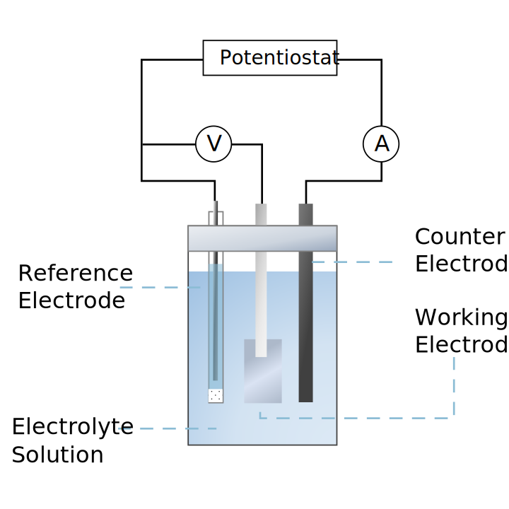

3 Electrode Setup
- Working Electrode (WE): FTO-based electrode where the electrochemical reaction of interest occurs; offers transparency for spectroscopic measurements and stability across wide potential windows.
- Reference Electrode (RE): Provides a stable potential reference point without passing current; typically Ag/AgCl, SCE, or similar with consistent, well-defined equilibrium potential.
- Counter Electrode (CE): Completes the circuit allowing current to flow; made of inert materials like platinum or carbon with larger surface area than the working electrode.
